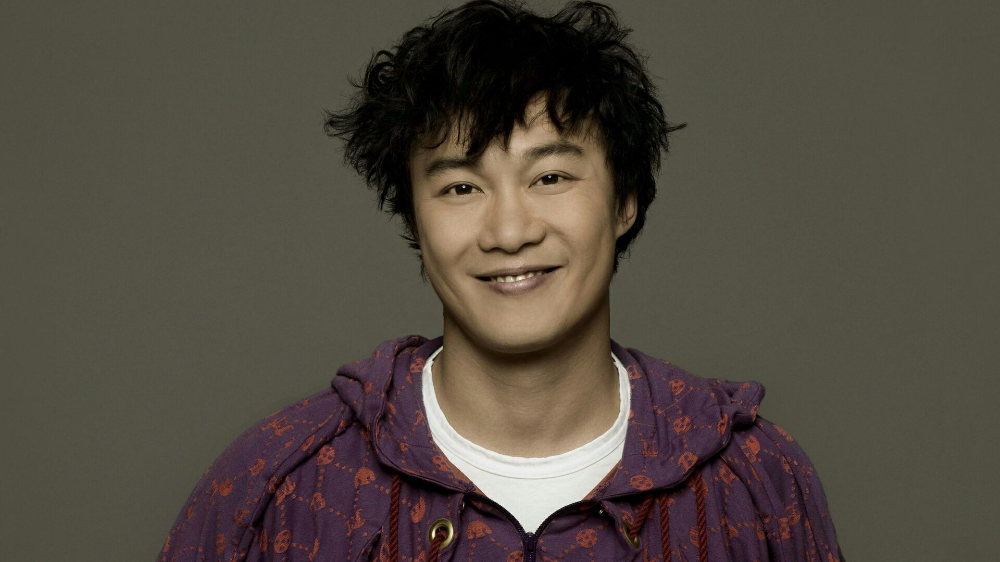
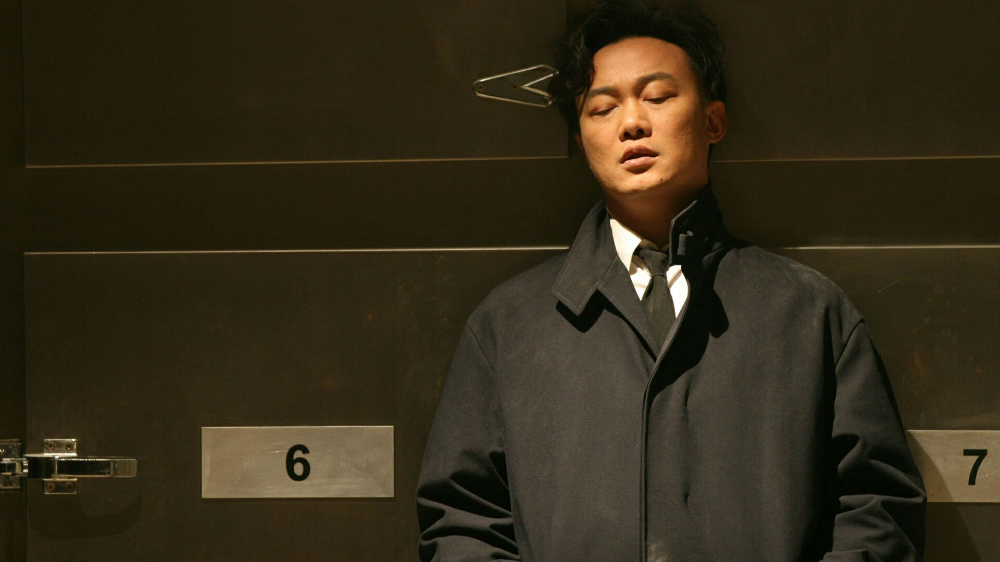
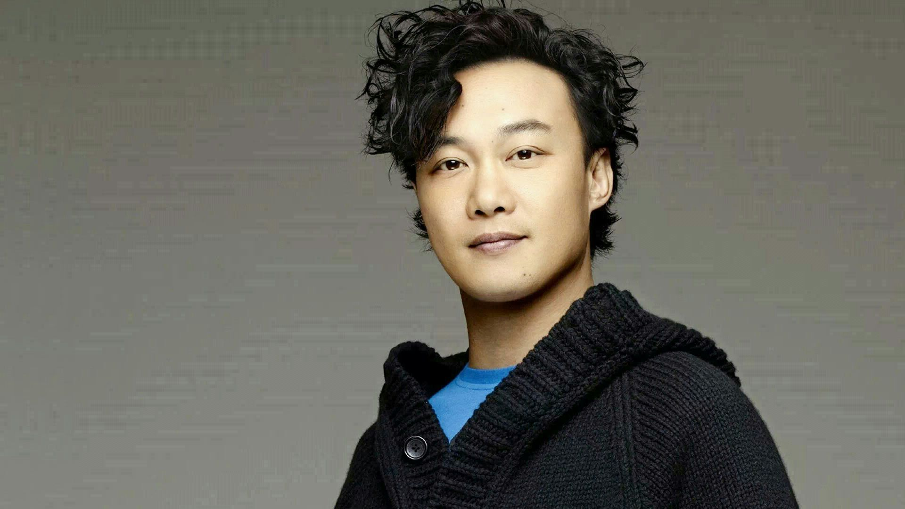

陈奕迅
陈奕迅（Eason Chan），1974年7月27日出生于香港，中国香港流行乐男歌手、演员，毕业于英国金斯顿大学。
重要事件
- 1995年暑假期间，陈奕迅参加TVB举办的第14届新秀歌唱大赛，并获得冠军
- 1995年tvb新秀歌唱比赛冠军
- 1995年tvb新秀歌唱比赛冠军(5张)并与华星唱片公司签下合约，从而正式进入香港乐坛。
- 1996年，发行首张个人首张粤语专辑《陈奕迅》；同年，获得叱咤乐坛流行榜叱咤新力军男歌手银奖 。
- 1997年，发行个人首张国语专辑《一滴眼泪》；4月12日，发行粤语专辑《与我常在》，同名主打歌《与我常在》获得第二十届十大中文金曲颁奖典礼最佳创作歌曲奖；同年，主演个人首部电影《旺角大家姐》。
- 1998年5月，发行粤语专辑《我的快乐时代》。专辑中的歌曲《天下无双》让陈奕迅在乐坛获得关注，并获得第二十一届十大中文金奖以及十大劲歌金曲奖；在这张专辑中，陈奕迅还首次参与音乐创作，为专辑作曲了《新曲+精选》以及《反高潮》两首歌曲；此外，陈奕迅还凭借该专辑获得叱咤乐坛流行榜颁奖典礼“叱咤乐坛至尊唱片大奖”。
- 1999年5月，发行粤语专辑《天佑爱人》，其中主打歌《每一个明天》获得第22届十大中文金曲奖；10月7日至10日，在香港体育馆举行4场“Big
- Live陈奕迅大个唱99”演唱会；12月，发行粤语专辑《幸福》；该专辑成为陈奕迅确立个人音乐风格的作品；收录于专辑中的歌曲《幸福摩天轮》获得叱咤乐坛流行榜颁奖典礼叱咤乐坛我最喜爱的歌曲奖以及十大劲歌金曲奖。
成就和荣誉
- ▪ 2018 第十三届 KKBOX数位音乐风云榜 十大风云歌手
- ▪ 2018 第29届 台湾金曲奖年度专辑 《C‘mon In~》
- ▪ 2018 第29届 台湾金曲奖最佳国语男歌手奖 《C‘mon In~》
- ▪ 2017 第十一届 音乐盛典咪咕汇年度港台最受欢迎男歌手
- ▪ 2017 CASH金帆音乐奖最佳男歌手演绎 《四季》
- ▪ 2017 第四十届 十大中文金曲颁奖音乐会优秀流行歌手大奖
- ▪ 2017 第四十届 十大中文金曲颁奖音乐会优秀流行国语歌曲奖－金奖 谁来剪月光
- ▪ 2017 第四十届 十大中文金曲颁奖音乐会全国最佳歌手奖(男歌手)
- ▪ 2017 第四十届 十大中文金曲颁奖音乐会全球华人至尊金曲奖 谁来剪月光
- ▪ 2017 第四十届 十大中文金曲颁奖音乐会最优秀流行男歌手
- ▪ 2017 华语金曲奖十大华语金曲(国语) 在这个世界相遇
- ▪ 2017 华语金曲奖十大华语金曲(粤语) 四季
- ▪ 2017 华语金曲奖年度最佳粤语歌曲 四季
- ▪ 2017 华语金曲奖我最喜爱的男歌手
- ▪ 2016 第三十九届 十大中文金曲颁奖音乐会优秀流行歌手大奖
- ▪ 2016 第三十九届 十大中文金曲颁奖音乐会最优秀流行男歌手
- ▪ 2016 第三十九届 十大中文金曲颁奖音乐会全国最佳男歌手
- ▪ 2016 第三十九届 十大中文金曲颁奖音乐会十大中文金曲 四季
- ▪ 2016 第三十九届 十大中文金曲颁奖音乐会全球华人至尊金曲奖 四季
- ▪ 2016 新城劲爆颁奖礼新城劲爆25周年音乐大奖
- ▪ 2016 第十届 音乐盛典咪咕汇 十年十大金曲 稳稳的幸福
- ▪ 2016 第十届 音乐盛典咪咕汇 年度十大金曲 人生马拉松
- ▪ 2016 第十届 音乐盛典咪咕汇 年度最佳粤语专辑 准备中
- ▪ 2016 第十届 音乐盛典咪咕汇 年度最佳男歌手
- ▪ 2016 第十届 音乐盛典咪咕汇十年最受欢迎歌手
- ▪ 2016 华语金曲奖十大华语唱片 准备中
- ▪ 2016 华语金曲奖 十大华语金曲 无条件
- ▪ 2016 第十一届 KKBox数位音乐风云榜年度粤语歌手
- ▪ 2016 音悦V榜盛典 港台年度专辑 准备中
- ▪ 2016 全球华语歌曲排行榜
- ▪ 2016 全球华语歌曲排行榜 最佳专辑奖 准备中
- ▪ 2016 CASH金帆音乐奖最广泛演出金帆奖 无条件
- ▪ 2016 叱咤乐坛流行榜颁奖典礼叱咤乐坛至尊歌曲大奖 四季
- ▪ 2015 第19届 第19届全球华语榜中榜最受欢迎男歌手奖 （提名）
- ▪ 2015 第37届 十大中文金曲音乐会最优秀流行男歌手大奖
- ▪ 2015 第37届 十大中文金曲音乐会优秀流行歌手大奖
- ▪ 2015 第26届 台湾金曲奖-最佳国语男歌手
- ▪ 2015 第26届 台湾金曲奖最佳国语男歌手奖 米·闪
- ▪ 2015 第五届 全球流行音乐金榜年度最佳男歌手
- ▪ 2015 第五届 全球流行音乐金榜年度进榜最久冠军歌曲 你给我听好
- ▪ 2015 第五届 全球流行音乐金榜年度二十大金曲 你给我听好
- ▪ 2015 HITO流行音乐奖颁奖典礼 海外歌手(香港)
- ▪ 2015 CASH金帆音乐奖最佳男歌手演绎 《无条件》
- ▪ 2015 IFPI香港唱片销量大奖颁奖礼 十大数码畅销歌曲 无条件
- ▪ 2014-01-12 第36届 十大中文金曲优秀流行歌手大奖
- ▪ 2014-01-12 第36届 十大中文金曲全球华人至尊金曲奖 任我行
- ▪ 2014-01-12 第36届 十大中文金曲奖 任我行
- ▪ 2014-01-12 第36届 十大中文金曲奖全年最高销量歌手大奖
- ▪ 2014-01-12 第36届 十大中文金曲奖全国最佳歌手奖（男歌手）
- ▪ 2014-01-12 第36届 十大中文金曲奖最优秀流行男歌手奖
- ▪ 2014-01-01 叱咤乐坛流行榜颁奖典礼叱咤乐坛至尊歌曲大奖 任我行
- ▪ 2014-01-01 叱咤乐坛流行榜颁奖典礼叱咤乐坛我最喜爱歌曲大奖 任我行
- ▪ 2014-01-01 叱咤乐坛流行榜颁奖典礼叱咤乐坛男歌手金奖
- ▪ 2014-01-01 叱咤乐坛流行榜颁奖典礼叱咤乐坛至尊唱片大奖 the key
- ▪ 2014-01-01 叱咤乐坛流行榜颁奖典礼叱咤乐坛我最喜爱的男歌手
- ▪ 2013-12 新城劲爆颁奖礼新城劲爆年度歌手大奖
- ▪ 2013-12 新城劲爆颁奖礼新城劲爆年度歌曲大奖 任我行
- ▪ 2013-12 新城劲爆颁奖礼新城全球劲爆歌曲 任我行
- ▪ 2013-12 新城劲爆颁奖礼新城全球劲爆歌手
- ▪ 2013-12 新城劲爆颁奖礼新城劲爆学生我最欣赏男歌手
- ▪ 2013-11-04 CASH金帆音乐奖2012CASH最广泛演出金帆奖 重口味
- ▪ 2013-11-04 CASH金帆音乐奖最佳男歌手演绎奖 任我行
- ▪ 2013-11-04 CASH金帆音乐奖CASH最佳歌曲大奖 任我行
- ▪ 2013 第35届 十大中文金曲十大歌曲奖 重口味
- ▪ 2013 第35届 十大中文金曲全年最高销量歌手大奖
- ▪ 2013 第35届 十大中文金曲优秀流行歌手大奖
- ▪ 2013 第35届 十大中文金曲最优秀流行男歌手
- ▪ 2013 大众音乐榜大众华语最佳男歌手奖 （提名）
- ▪ 2013 2012百度沸点百度音乐10年最受欢迎男歌手
- ▪ 2013 第35届 十大中文金曲全球华人至尊金曲奖 重口味
- ▪ 2012 新城劲爆颁奖礼2012新城劲爆歌曲 完
- ▪ 2012 SINA Music乐坛民意指数颁奖礼SINA M我最喜爱至尊金曲 重口味
- ▪ 2012 第12届 全球华语歌曲排行榜年度二十大金曲奖 孤独患者
- ▪ 2012 新城国语力颁奖礼2012新城国语力全球至尊舞台大奖
- ▪ 2012 新城劲爆颁奖礼新城全球劲爆歌手
- ▪ 2012 SINA Music乐坛民意指数颁奖礼SINA Musi最高收听率二十大歌曲奖 重口味
- ▪ 2012 叱咤乐坛流行榜颁奖典礼叱咤乐坛男歌手金奖
- ▪ 2012 新城国语力颁奖礼2012新城国语力全球最受欢迎至尊歌手大奖
- ▪ 2012 加拿大至HiT中文歌曲排行榜全国推崇十大歌曲奖（粤语） 重口味
- ▪ 2012 新城国语力颁奖礼2012新城国语力歌曲奖 孤独患者
- ▪ 2012 第8届 KKBOX数位音乐风云榜十大风云歌手奖
- ▪ 2012 叱咤乐坛流行榜颁奖典礼叱咤乐坛至尊歌曲大奖 重口味
- ▪ 2012 2012华语金曲奖十大华语唱片奖 因为爱情
- ▪ 2012 第12届 全球华语歌曲排行榜最佳专辑奖
- ▪ 2012 新城劲爆颁奖礼新城劲爆年度歌手大奖
- ▪ 2012 第12届 全球华语歌曲排行榜最佳男歌手奖
- ▪ 2012 新城劲爆颁奖礼2012新城全球劲爆歌曲奖 重口味
- ▪ 2012 SINA Music乐坛民意指数颁奖礼SINA Mus对唱演绎金曲大奖 重口味
- ▪ 2012 全港民意流行音乐颁奖礼2012十大最受欢迎歌曲奖 完
- ▪ 2012 SINA Music乐坛民意指数颁奖礼SINA Mu我最喜爱至尊大碟奖 ..3mm
- ▪ 2012 加拿大至HiT中文歌曲排行榜全国推崇男歌手奖（粤语）
- ▪ 2011 新城国语力颁奖礼2011新城国语力歌曲奖 等你爱我
- ▪ 2011 第34届 十大中文金曲颁奖音乐会全国最佳男歌手奖
- ▪ 2011 加拿大至HiT中文歌曲排行榜全国推崇十大歌曲奖（粤语） 苦瓜
- ▪ 2011 新城劲爆颁奖礼2011新城劲爆年度歌曲大奖 苦瓜
- ▪ 2011 CASH金帆音乐奖最佳男歌手演绎奖 六月飞霜
- ▪ 2011 华语金曲奖2011年度最佳粤语男歌手奖
- ▪ 2011 CASH金帆音乐奖最佳合唱演绎奖 因为爱情
- ▪ 2011 2011年度叱咤乐坛流行榜颁奖典礼专业推介叱咤十大歌曲奖 六月飞霜
- ▪ 2011 2011年度SINA Music乐坛民意指数颁奖礼我最喜爱全国男歌手
- ▪ 2011 IFPI香港唱片销量大奖颁奖礼十大数码畅销歌曲奖 陀飞轮
- ▪ 2011 CASH金帆音乐奖2010CASH最广泛演出金帆奖（粤语流行作品） 一丝不挂
- ▪ 2011 加拿大至HiT中文歌曲排行榜全国推崇男歌手（粤语）
- ▪ 2011 新城劲爆颁奖礼2011新城全球劲爆歌手
- ▪ 2011 第34届 十大中文金曲颁奖音乐会最优秀流行男歌手
- ▪ 2011 CASH金帆音乐奖最佳歌曲大奖 六月飞霜
- ▪ 2011 新城国语力颁奖礼2011新城国语力全球最受欢迎至尊歌手大奖
- ▪ 2011 华语金曲奖2011十大华语唱片 Time Flies
- ▪ 2011 新城劲爆颁奖礼2011新城全球劲爆歌曲 六月飞霜
- ▪ 2011 第34届 十大中文金曲颁奖音乐会全年最高销量男歌手
- ▪ 2011 第34届 十大中文金曲颁奖音乐会优秀流行歌手大奖
- ▪ 2011 华语金曲奖2011十大华语金曲 陀飞轮
- ▪ 2011 2011年度SINA Music乐坛民意指数颁奖礼SINA Music 至尊大碟 Stranger Under My Skin
- ▪ 2011 2011年度SINA Music乐坛民意指数颁奖礼新浪微博发声男歌手奖
- ▪ 2011 第34届 十大中文金曲颁奖音乐会十大歌曲奖 六月飞霜
- ▪ 2011 第7届 KKBOX数位音乐风云榜年度粤语歌手
- ▪ 2011 新城劲爆颁奖礼2011新城劲爆播放指数大奖
- ▪ 2011 新城国语力颁奖礼2011新城国语力歌曲 因为爱情
- ▪ 2011 2011年度叱咤乐坛流行榜颁奖典礼叱咤乐坛我最喜爱的男歌手
- ▪ 2010 新城劲爆歌曲奖 一丝不挂
- ▪ 2010 新城全球劲爆舞台大奖
- ▪ 2010 十大中文金曲颁奖典礼传媒推荐大奖男歌手
- ▪ 2010 十大中文金曲颁奖典礼全球华人至尊金曲奖 陀飞轮
- ▪ 2010 十大中文金曲颁奖典礼十大中文金曲 陀飞轮
- ▪ 2010 叱咤乐坛至尊唱片大奖 TIME FLIES
- ▪ 2010 蒙牛酸酸乳音乐风云榜十年盛典十年港台十大金曲2006年金曲 爱情转移
- ▪ 2010 十大中文金曲颁奖典礼传媒推荐大奖歌曲 陀飞轮
- ▪ 2010 叱吒乐坛流行榜颁奖典礼专业推介叱咤十大歌曲奖 陀飞轮
- ▪ 2010 十大中文金曲颁奖典礼最优秀流行男歌手
- ▪ 2010 十大中文金曲颁奖典礼- 全年最高销量男歌手
- ▪ 2010 新城劲爆我最欣赏男歌手
- ▪ 2010 蒙牛酸酸乳音乐风云榜十年盛典最具影响力音乐人
- ▪ 2010 十大中文金曲颁奖典礼优秀流行歌手大奖
- ▪ 2010 新城全球劲爆歌手
- ▪ 2010 华语金曲奖30年经典评选中获得“30年30人”、“30年30碟”、“30年30歌” 专辑《U87》、歌曲《明年今日(十年)》
- ▪ 2009 十大中文金曲颁奖典礼优秀流行歌手大奖
- ▪ 2009 中歌榜年度最佳男歌手(港台)
- ▪ 2009 蒙牛酸酸乳音乐风云榜最佳男歌手
- ▪ 2009 新城国语力颁奖礼获得全球至尊舞台大奖
- ▪ 2009 第六届 劲歌王颁奖典礼港台地区最受欢迎男歌手
- ▪ 2009 蒙牛酸酸乳音乐风云榜评审团大奖,年度风云大奖
- ▪ 2009 叱咤乐坛流行榜颁奖礼叱咤乐坛男歌手金奖
- ▪ 2009 蒙牛酸酸乳音乐风云榜最佳歌曲奖 路...一直都在
- ▪ 2009 新城国语力颁奖礼获得香港地区男歌手奖
- ▪ 2009 香港新浪乐坛民意指数颁奖礼我最喜爱至尊大碟 H3M
- ▪ 2009 第13届 中华音乐人交流协会年度十大专辑 不想放手
- ▪ 2009 十大中文金曲颁奖典礼全年最高销量男歌手
- ▪ 2009 叱咤乐坛流行榜颁奖礼专业推介叱咤乐坛至尊歌曲大奖 七百年后
- ▪ 2009 腾讯网星光大典港台年度男歌手
- ▪ 2009 叱咤乐坛流行榜颁奖礼叱咤乐坛我最喜爱的男歌手
- ▪ 2009 MY Astro至尊流行榜颁奖典礼至尊金曲 七百年后
- ▪ 2009 MY Astro至尊流行榜颁奖典礼至尊金曲 于心有愧
- ▪ 2009 香港新浪乐坛民意指数颁奖礼最高收听率二十大歌曲奖 七百年后
- ▪ 2009 MY Astro至尊流行榜颁奖典礼至尊海外男歌手奖
- ▪ 2009 2008MusicRadio中国TOP排行榜传媒推荐大奖
- ▪ 2009 叱咤乐坛流行榜颁奖礼叱咤乐坛至尊唱片大奖 H3M
- ▪ 2009 中歌榜年度金曲奖 床头灯
- ▪ 2009 第13届 中华音乐人交流协会年度十大金曲 不要说话
- ▪ 2009 第20届 台湾金曲奖最佳国语专辑奖 不想放手
- ▪ 2009 叱咤乐坛流行榜颁奖礼四台联颁音乐大奖 H3M
- ▪ 2009 十大中文金曲颁奖典礼最优秀流行男歌手
- ▪ 2009 2008MusicRadio中国TOP排行榜港台年度金曲 路…一直都在
- ▪ 2009 十大中文金曲颁奖典礼全球华人至尊金曲奖 七百年后
- ▪ 2009 第13届 中华音乐人交流协会年度十大金曲 倒带人生
- ▪ 2009 新城国语力颁奖礼获得至尊歌手大奖
- ▪ 2009 蒙牛酸酸乳音乐风云榜最佳音乐录影带奖 路...一直都在
- ▪ 2009 十大中文金曲颁奖典礼十大中文金曲 七百年后
- ▪ 2009 蒙牛酸酸乳音乐风云榜最佳专辑奖 不想放手
- ▪ 2009 十大中文金曲颁奖典礼全国最佳歌手奖男歌手
- ▪ 2009 新城国语力颁奖礼获得年度歌曲奖 然后怎样
- ▪ 2008 2008年度新城劲爆颁奖礼新城劲爆男歌手
- ▪ 2008 新城国语力颁奖礼新城国语力歌曲 路...一直都在
- ▪ 2008 第9届 CCTV-MTV音乐盛典香港地区年度最受欢迎男歌手奖
- ▪ 2008 第31届 十大中文金曲颁奖典礼优秀流行歌手大奖
- ▪ 2008 新城国语力颁奖礼新城国语力年度歌曲大奖 路...一直都在
- ▪ 2008 2008年度新城劲爆颁奖礼新城全球劲爆歌曲 路一直都在
- ▪ 2008 中歌榜年度最佳男歌手（港台）
- ▪ 2008 第31届 十大中文金曲颁奖典礼优秀流行国语歌曲奖
- ▪ 2008 2008年度星光大典港台地区年度男歌手
- ▪ 2008 2008年度TVB8金曲榜颁奖典礼金曲奖 路一直都在
- ▪ 2008 新城国语力颁奖礼新城国语力男歌手大奖
- ▪ 2008 2008年度TVB8金曲榜颁奖典礼最受欢迎男歌手奖
- ▪ 2008 2008年度新城劲爆颁奖礼新城全球劲爆歌手
- ▪ 2008 叱咤乐坛流行榜颁奖礼叱咤乐坛我最喜爱的男歌手
- ▪ 2008 新城国语力颁奖礼新城国语力演绎奖
- ▪ 2008 2008年度TVB8金曲榜颁奖典礼年度金曲奖 路...一直都在
- ▪ 2008 翡翠歌星贺台庆最佳造型男歌星奖
- ▪ 2008 2008年度新城劲爆颁奖礼新城劲爆我最欣赏男歌手大奖
- ▪ 2008 第31届 十大中文金曲颁奖典礼全年最高销量歌手大奖
- ▪ 2008 2008年度新城劲爆颁奖礼新城劲爆歌曲奖
- ▪ 2008 叱咤乐坛流行榜颁奖礼专业推介叱咤十大歌曲奖 路一直都在
- ▪ 2008 叱咤乐坛流行榜颁奖礼叱咤乐坛男歌手铜奖
- ▪ 2008 十大劲歌金曲颁奖典礼亚太区最受欢迎香港男歌星
- ▪ 2008 第八届全球华语歌曲排行榜颁奖礼最佳男歌手、最受欢迎男歌手五强之一
- ▪ 2008 新城国语力颁奖礼新城国语力年度歌手大奖
- ▪ 2008 2008年度星光大典 港台地区年度专辑 不想放手
- ▪ 2008 第31届 十大中文金曲颁奖典礼全国最佳男歌手奖
- ▪ 2008 十大劲歌金曲颁奖典礼十大劲歌金曲奖 歌颂
- ▪ 2008 2008年度TVB8金曲榜颁奖典礼全球观众最爱粤曲歌金奖 时代巨轮
- ▪ 2008 第31届 十大中文金曲颁奖典礼最优秀流行男歌手奖
- ▪ 2007 十大中文金曲颁奖礼全年最高销量男歌手大奖
- ▪ 2007 四台联颁传媒卓越大奖
- ▪ 2007 十大中文金曲颁奖礼优秀流行歌手大奖
- ▪ 2007 十大劲歌金曲颁奖典礼最受欢迎华语歌曲奖银奖 淘汰
- ▪ 2007 新城劲爆颁奖礼新城全球劲爆舞台大奖
- ▪ 2007 十大劲歌金曲颁奖典礼最受欢迎男歌星
- ▪ 2007 叱咤乐坛流行榜颁奖礼专业推介叱咤十大歌曲奖 Crying in the Party
- ▪ 2007 十大中文金曲颁奖礼全球华人至尊金曲奖 富士山下
- ▪ 2007 新城劲爆颁奖礼新城全球劲爆歌手
- ▪ 2007 十大中文金曲颁奖礼全国最佳中文歌曲 富士山下
- ▪ 2007 叱咤乐坛流行榜颁奖礼叱咤乐坛至尊唱片 Listen to Eason Chan
- ▪ 2007 叱咤乐坛流行榜颁奖礼叱咤乐坛男歌手金奖
- ▪ 2007 新城劲爆颁奖礼新城劲爆大碟 Listen to Eason Chan
- ▪ 2007 叱咤乐坛流行榜颁奖礼叱咤乐坛我最喜爱的男歌手
- ▪ 2007 十大中文金曲颁奖礼最优秀流行男歌手大奖
- ▪ 2007 叱咤乐坛流行榜颁奖礼十年我最爱歌曲 K歌之王
- ▪ 2007 新城劲爆颁奖礼新城劲爆歌曲 Crying in the Party
- ▪ 2007 十大劲歌金曲颁奖典礼十大劲歌金曲奖 富士山下
- ▪ 2007 新城劲爆颁奖礼新城劲爆我最欣赏歌曲 富士山下
- ▪ 2007 十大中文金曲颁奖礼十大金曲奖 富士山下
- ▪ 2007 十大劲歌金曲颁奖典礼亚太区最受欢迎香港男歌星
- ▪ 2006 第29届 十大中文金曲颁奖礼最优秀流行男歌手
- ▪ 2006 2006年度SINA Music乐坛民意指数颁奖礼新歌试听最高收听率歌曲奖 富士山下
- ▪ 2006 十大劲歌金曲颁奖礼十大劲歌金曲 最佳损友
- ▪ 2006 2006年度新城劲爆颁奖礼新城劲爆歌曲 裙下之臣
- ▪ 2006 2006年度新城劲爆颁奖礼新城劲爆歌曲 最佳损友
- ▪ 2006 2006年度新城劲爆颁奖礼新城劲爆国语歌手大奖
- ▪ 2006 2006年度新城劲爆颁奖礼新城劲爆专辑 Life Continues...
- ▪ 2006 叱吒乐坛流行榜颁奖典礼叱吒乐坛男歌手金奖
- ▪ 2006 叱吒乐坛流行榜颁奖典礼叱吒乐坛我最喜爱的男歌手
- ▪ 2006 叱吒乐坛流行榜颁奖典礼专业推介叱吒十大歌曲奖 富士山下
- ▪ 2006 第29届 十大中文金曲颁奖礼十大中文金曲 最佳损友
- ▪ 2006 十大劲歌金曲颁奖礼最受欢迎男歌星
- ▪ 2006 2006年度新城劲爆颁奖礼全球劲爆舞台大奖
- ▪ 2006 CASH金帆音乐奖最佳男歌手演绎奖（流行音乐） 落花流水
- ▪ 2006 第29届 十大中文金曲颁奖礼优秀流行歌手大奖
- ▪ 2006 2006年度新城劲爆颁奖礼新城劲爆男歌手
- ▪ 2005 第28届 十大中文金曲颁奖礼全球华人至尊金曲奖 夕阳无限好
- ▪ 2005 第28届 十大中文金曲颁奖礼最优秀流行男歌手
- ▪ 2005 叱吒乐坛流行榜颁奖典礼叱吒乐坛我最喜爱的歌曲大奖 夕阳无限好
- ▪ 2005 第28届 十大中文金曲颁奖礼全国最受欢迎歌手奖（男歌手银奖）
- ▪ 2005 第28届 十大中文金曲颁奖礼优秀流行歌手大奖
- ▪ 2005 四台联颁音乐大奖 2005传媒大奖
- ▪ 2005 叱吒乐坛流行榜颁奖典礼叱吒乐坛我最喜爱的男歌手
- ▪ 2005 2005年度新城劲爆颁奖礼劲爆年度歌曲大奖 夕阳无限好
- ▪ 2005 叱咤乐坛流行榜颁奖典礼四台联颁大碟奖 U87
- ▪ 2005 RoadShow至尊音乐颁奖礼2005RoadShow至尊歌曲 夕阳无限好
- ▪ 2005 叱吒乐坛流行榜颁奖典礼叱吒乐坛至尊歌曲大奖 夕阳无限好
- ▪ 2005 2005年度新城劲爆颁奖礼劲爆歌曲大奖 浮夸
- ▪ 2005 第28届 十大中文金曲颁奖礼十大中文金曲 夕阳无限好
- ▪ 2005 2005年度新城劲爆颁奖礼劲爆大碟 U87
- ▪ 2005 叱吒乐坛流行榜颁奖典礼叱吒乐坛至尊唱片大奖 U87
- ▪ 2005 2005年度新城劲爆颁奖礼劲爆我最欣赏歌曲 浮夸
- ▪ 2005 十大劲歌金曲颁奖礼十大劲歌金曲 夕阳无限好
- ▪ 2005 CASH金帆音乐奖最佳男歌手演绎奖 浮夸
- ▪ 2005 第28届 十大中文金曲颁奖礼全国最受欢迎中文歌曲奖银奖 夕阳无限好
- ▪ 2005 2005年度新城劲爆颁奖礼劲爆歌曲大奖 夕阳无限好
- ▪ 2005 RoadShow至尊音乐颁奖礼2005RoadShow至尊歌曲
- ▪ 2005 2005年度新城劲爆颁奖礼劲爆男歌手
- ▪ 2005 十大劲歌金曲颁奖礼最受欢迎广告歌曲大奖 听听
- ▪ 2005 叱吒乐坛流行榜颁奖典礼叱吒乐坛男歌手金奖
- ▪ 2003 新城劲爆颁奖礼新城劲爆歌曲 十面埋伏
- ▪ 2003 第14届 台湾金曲奖最佳国语男演唱人奖
- ▪ 2003 叱吒乐坛流行榜颁奖典礼叱吒乐坛男歌手铜奖
- ▪ 2003 IFPI十大最高销量国语唱片 黑白灰
- ▪ 2003 IFPI全年最高销量男歌手
- ▪ 2003 第14届 台湾金曲奖最佳国语专辑 Special Thanks To
- ▪ 2003 十大劲歌金曲颁奖典礼十大劲歌金曲 十面埋伏
- ▪ 2003 叱吒乐坛流行榜颁奖典礼专业推介叱吒十大歌曲奖 十面埋伏
- ▪ 2003 四台联颁音乐大奖 歌曲奖 十面埋伏
- ▪ 2002 叱吒乐坛流行榜颁奖典礼叱吒乐坛男歌手金奖
- ▪ 2002 叱吒乐坛流行榜颁奖典礼叱吒乐坛至尊唱片大奖 The Line-up
- ▪ 2002 第25届 十大中文金曲颁奖礼十大中文金曲 明年今日
- ▪ 2002 十大劲歌金曲颁奖典礼金曲金奖 明年今日
- ▪ 2002 十大劲歌金曲颁奖典礼十大劲歌金曲 明年今日
- ▪ 2002 第25届 十大中文金曲颁奖礼全球华人至尊金曲奖 明年今日
- ▪ 2002 叱吒乐坛流行榜颁奖典礼专业推介叱吒十大歌曲奖 人来人往
- ▪ 2001 第8届 Channel V第8届全球华语音乐榜卓越歌艺奖
- ▪ 2001 新城劲爆颁奖礼新城劲爆歌曲奖 Shall We Talk
- ▪ 2001 第8届 Channel V第8届全球华语音乐榜最受欢迎歌曲 爱是怀疑
- ▪ 2001 新城劲爆颁奖礼四台联颁音乐大奖大碟奖 Shall We Dance? Shall We Talk!
- ▪ 2001 叱吒乐坛流行榜颁奖典礼叱吒乐坛至尊唱片大奖 Shall We Dance? Shall We Talk!
- ▪ 2001 新城劲爆颁奖礼新城劲爆年度歌曲大奖 Shall We Talk
- ▪ 2001 十大劲歌金曲颁奖典礼十大劲歌金曲 Shall We Talk
- ▪ 2001 第24届 十大中文金曲颁奖典礼全球华人至尊金曲奖 Shall We Talk
- ▪ 2001 叱吒乐坛流行榜颁奖典礼叱吒乐坛男歌手金奖
- ▪ 2001 2001年儿歌金曲颁奖典礼十大儿歌金曲 单车
- ▪ 2001 十大劲歌金曲颁奖典礼金曲金奖 Shall We Talk
- ▪ 2001 叱吒乐坛流行榜颁奖典礼专业推介叱吒十大歌曲奖 Shall We Talk
- ▪ 2001 叱吒乐坛流行榜颁奖典礼叱吒乐坛15-24岁最喜爱的人人英雄奖
- ▪ 2001 第24届 十大中文金曲颁奖典礼十大中文金曲 Shall We Talk
- ▪ 2001 第8届 Channel V第8届全球华语音乐榜特别推荐新浪潮
- ▪ 2001 第24届 十大中文金曲颁奖典礼最受欢迎卡拉OK男歌手奖
- ▪ 2001 第24届 十大中文金曲颁奖典礼四台联颁传媒大奖
- ▪ 2000 2000年度儿歌金曲颁奖典礼最受欢迎儿歌组合奖金奖 真正本色
- ▪ 2000 CASH金帆音乐奖最佳男歌手演绎奖（流行音乐） K歌之王
- ▪ 2000 十大劲歌金曲颁奖典礼十大劲歌金曲 K歌之王
- ▪ 2000 叱吒乐坛流行榜颁奖典礼叱吒乐坛我最喜爱的歌曲大奖 K歌之王
- ▪ 2000 叱吒乐坛流行榜颁奖典礼叱吒乐坛男歌手银奖
- ▪ 2000 叱吒乐坛流行榜颁奖典礼叱吒乐坛至尊歌曲大奖 K歌之王
- ▪ 1999 十大劲歌金曲颁奖礼十大劲歌金曲奖 幸福摩天轮
- ▪ 1999 叱吒乐坛流行榜颁奖典礼专业推介叱吒十大歌曲奖 幸福摩天轮
- ▪ 1999 四台联颁音乐大奖歌曲奖 幸福摩天轮
- ▪ 1999 叱吒乐坛流行榜颁奖典礼叱吒乐坛至尊唱片大奖 天佑爱人
- ▪ 1999 叱吒乐坛流行榜颁奖典礼叱吒乐坛我最喜爱的歌曲大奖 幸福摩天轮
- ▪ 1998 第21届 十大中文金曲颁奖典礼十二优歌手奖
- ▪ 1998 十大劲歌金曲颁奖礼最受欢迎广告歌曲大奖铜奖 大激想
- ▪ 1998 新城劲爆颁奖礼音乐会新城劲爆歌曲 天下无双
- ▪ 1998 第21届 十大中文金曲颁奖典礼十大中文金曲 天下无双
- ▪ 1998 叱吒乐坛流行榜颁奖典礼叱吒乐坛至尊唱片大奖 我的快乐时代
- ▪ 1998 十大劲歌金曲颁奖礼十大劲歌金曲奖 天下无双
- ▪ 1998 新城劲爆颁奖礼音乐会四台联颁卓越表现大奖
- ▪ 1998 1998年儿歌金曲颁奖典礼十大儿歌金曲及金曲金奖 超人的主题曲
- ▪ 1998 叱吒乐坛流行榜颁奖典礼专业推介叱吒十大歌曲奖 天下无双
- ▪ 1997 第20届 十大中文金曲颁奖典礼最佳创作歌曲 与我常在
- ▪ 1997 第20届 十大中文金曲颁奖典礼飞跃大奖男歌手银奖
- ▪ 1996 叱吒乐坛流行榜叱吒新力军男歌手银奖
- ▪ 1996 新城劲爆颁奖礼1996金心新贵新人钻石奖
主要作品
| 国语专辑 |
粤语专辑 |
| ▪ 上五楼的快活 |
▪ 陈奕迅48首选 |
| ▪ 不想放手 |
▪ Live For Today |
| ▪ 认了吧 |
▪ The Line Up |
| ▪ 酝酿 |
▪ Mixed Up |
| ▪ 一滴眼泪 |
▪ …3mm |
| ▪ 怎么样 |
▪ U-87 |
| ▪ 反正是我 |
▪ time flies |
| ▪ 婚礼的祝福 |
▪ Taste the Atmosphere |
| ▪ 我的最好时代 |
▪ 与我常在 |
| ▪ H3M |
▪ Sound & Sight |
| ▪ 新生活 |
▪ Great 5000 Secs |
| ▪ 我的快乐时代 |
▪ 4 A Change & Hits |
| ▪ u87 |
▪ 五星级的家 |
| ▪ 68分29秒 |
▪ The Easy Ride |
| ▪ 幸福 |
▪ Eason 18首选 |
| ▪ 天佑爱人 |
▪ Listen To Eason Chan |
| ▪ Stranger Under My Skin |
▪ 陈奕迅 |
生活照


